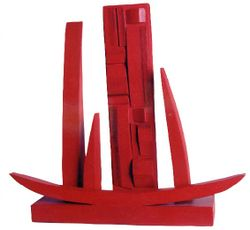

Palabras extremadamente difíciles
 De: La Frikipedia, la enciclopedia extremadamente seria.
De: La Frikipedia, la enciclopedia extremadamente seria.
| De la serie la Lingüística es fácil:
|
| Palabras extremadamente difíciles
|
|
|
| Descubridor
|
Los profesores de lengua
|
| Idiomas habituales
|
demasiados, mira en el diccionario
|
| Estructura
|
la mas chunga y difícil
|
| Morfología
|
jodeísta, se deben de tener ganas de joder
|
| Dificultad
|
bastante por no decir mucha
|
| Frecuencia de uso
|
poca pero demasiada
|
| Notas
|
los trabalenguas son sus enemigos
|
Son palabras difíciles de pronunciar o que son la hostia de complicadas las muy hijas de la grandisima y todo poderosa Frikipedia. Suelen tener muchas letras repetidas y seguidas.
Ejemplos de palabras difíciles y como se pronuncian...
 Un
Rombicosidodecaedro básico en todo su esplendor
- Pronunciación: Solbangarnerismo
- Significado: Significa que te gusta cortar los cojones a los perros o cortar testículos rosados, solo rosados.
- Pronunciación: Rombi... rombico.. ¿qué coño es eso?
- Alternativa: Ron bi-cocido (cocido 2 veces) de caedro (¿quién coño es Caedro que varias veces lo oigo nombrar?)
- Pronunciación: Ovivo... ovovivo... ovivibowie.... como coño sea, joder.
- Significado: Son los seres que se reproducen mediante la fotosíntesis y que al nacer tienen una muela en la axila y cagan cuando hablan.
- Electroencefalográficamente
- Pronunciación: Electrocardiograaadbiafbfiaduyfbfdihydmente
- Significado: Que te gusta comerte la caca de tu perro, junto con la menstruación de tu gato. Pero solo si son los dos juntos, sino nada.
- Pronunciación: Buf, o más...
- Alternativa: Acá, chaca (del bolsillo) la pun-lady gaga (reconozcan que esto sí es una puta mierda, no sirvo para esto).
- Pronunciación: Anti... consti... tucio... anal... mente!!
- Significado: Algo que no está bien... eso creo... o sino es algo acerca del ano.
- Pronunciación: NEURONA de FIBRA MAS TOS Y S
- Significado: Enfermedad cerebral que se adquiere cuando desayunas 'Special K' con vodka mientras estás resfriad@, pregunta al hombre elefante y a C3PO lo que pasa.
- Pronunciación: Esther se llama mi madre.
- Significado: Sólo sirve para usarlo en trabalenguas. También es un grave insulto.
- Pronunciación: Como se escribe
- Significado: Los seguidores del piloto indio de Fórmula 1 Narain Karthikeyan son seguidores fieles de está religión.
- Superescalifragilisticoespialidoso
- Pronunciación: Superescalifragilisticoespialidoso, esta es fácil de pronunciar.
- Significado: Mierda de palabra que pasará a los anales de la historia por ser la palabra más estúpida jamás pronunciada.
- Pronunciación: marico-maricondoble-maricontriple-zombilandia.
- Significado: Que te gusta tirarte animales cachorros muertos del mismo sexo que ti.
- Pronunciación: Chocolate... Touch!!
- Significado: Igual a la anterior.
- Pronunciación: Kiwipedia.
- Significado: Es la enciclopedia esa inútil y "seria" dirigida por Peter Griffin.
- Significado: Pollada que me acabo de inventar para hacer que pierdas tiempo de tu valiosa vida leyéndolo.
- Pronunciación: Dile que meta nitro sami... (palabra nacida en una competencia de Need for Speed).
- Significado: Compuesto químico derivado de la chorradamina.
- Pronunciación: Para Lele de pitar Pedos.
- Significado: Son animales que tienen sus patas en palalelo.
- Pronunciación: Como si fueras a decir espermatozoide pero le agregas cuajo y sacamoco.
- Significado: Es esperma caducado, también llamado esmegma.
- Octangolonoplasentaiconósico
- Pronunciación: Cómo coño hago para pronunciarlo.
- Significado: Son bichitos con nueve patitas.
- Metilendioximetanfetamina
- Pronunciación: Es como una frase. Metile a diox metanfetamina.
- Significado: Medicamento infantil para la tos.
- Pronunciación: Deso... desox... desuxivo... maldición, cómo coño voy a hacer.
- Alternativa: De eso sí, rabo... no... no... no "cleico".
- Significado: No se qué de las células o ácidos.
- Ugarterragaicoecheapaturri
- Pronunciación: Quien tenía que ponerla se voló la tapa de los sesos por ser demasiado difícil.
- Significado: Gñap en un idioma raro, quizá esperanto.
- Pronunciación: No, si esta no es difícil. Lo difícil es lo que representa.
- Hipopotomostrosesquipedaliofobia
- Pronunciación: Sí, la tiene.
- Significado: Miedo a los perros.
- Pronunciación: Mmmm... limítate a escucharla.
- Significado: Nombre muy común en los hombres varones de un pueblo de Cuenca.
- Pronunciación: Otto (el que maneja en los Simpsons) + rhino + laringo... Mierda, no sé...
- Significado: Apartado de la medicina que trata las nalgas.
- Hexakosioihexekontahexafobia
- Pronunciación: Si eres jebi jamás la pronunciarás (ningún jebi teme el 666).
- Alternativa: Se perdió, ya que su "creador" murió al ver el 666.
- Significado: Miedo a los pentáculos.
- Pronunciación: no es tan difícil, solo tienes que pronunciar "bajaladi... ah, mierda.
- Significado: Guadaña para pescar trufas.
- Pronunciación: Es más o menos así: yogurt que tiene papas y frutas.
- Significado: Ser mitológico creado por H. P. Lovecraft.
- Pronunciación: Está en tu teclado así que aprende solo.
- Significado: Control, dicho mu rápido.
- Linfogranulomatosis inginalis
- Pronunciación: Así como suena, nomas...
- Significado: Es cuando te quedas afónic@.
- Pronunciación: Pregunta a un mago.
- Significado: Cualidad de un abracadabreador profesional.
- Pronunciación: Si alguien lo sabe que borre esto y lo ponga.
- Significado: Ver artículo.
- Pronunciación: Troko lo otro kete tomorfoloto.
- Significado: Ver artículo.
- Pronunciación: ¿Caravincuntincuadrado?... El cielo está caravincuntincuadrado, ¿Quién lo desencaravincuntincuadrará?
- Significado: Se dice eso cuando alguien logra la cuadratura del círculo.
- Neotromponolomeonilopolonouta
- Pronunciación: Ak nah nalamin-pan-pun.
- Significado: 1º. Es cuando un@ se corta un dedo con la esquina de un globo y no deja de dar piruetas con la nariz. 2º. Tripulante escocés de dicho navío.
- Desanparangaricutirimicuarizador
- Pronunciación: Despronunciando parangu... parangaru... bueno, una de las que esta mas arriba (lo difícil es despronunciar).
- Pronunciación:' Como suena -.-
- Pronunciación: Se desconoce actualmente pero se esta trabajando en ello.
- Pronunciación: Encarabincunquintando.
- kerhtieurcioseuhriwcmoiweurhieskfjxbkjghieruhatiouehlriowejorijwe
- Pronunciación: Siéntate sobre el teclado.
- Pronunciación: Dihidroxifenilalaiasasfdfhdljsaaaaa!
- Significado: Palabra inventada por un biólogo loco que estudiaba la pigmentación de la piel.
- Macalacabasculapenosolcanichescapampantoniojosepeludo
- Pronunciación: Me llamo José Antonio.
- Pronunciación: Creo que es obvio.
- Significado: Se usa cuando te encuentras con una hembra de las anteriores especies comentadas e intentas librarte de un topillo-electronuclear.
- Pentakismyriohexakisquilioletracosiohexacontapentagonalis
- Pronunciación: Pen... penta.... pentakis... ¡¡¡AAAAAAAAHH¡¡¡ lo que sea.
- Significado:No tengo idea creo que es un pentágono de chorrocientos lados.
- Pentakismyriohexakisquilioletracosiohexacontapentagonaliedro
- Pronunciación:Igual que la anterior, sólo que ésta es más larga.
- Significado:No tengo idea, creo que es un pentaedro de chorrocientas caras.
- Pronunciación: ¡¡¡WTF¡¡¡
- Neumonoultramicroscopsilicovolcanoconeosis
- Pronunciación: Neumonía ultra microscópica del coño del volcán.
- Significado: Enfermedad que padecen aquellos drogadictos que no se saben suministrar la droga (esnifando cogollos, ingiriendo cocaína por el ano...), véase Pocholo.
- Melanocorropotocuentioncasiatorancochutofilia:
- Pronunciación: Dejémosla a la imaginación del lector.
- Significado: Que te dan ganas de tirar algo que no deberías cogerte porque es totalmente anormal y es considerando un problema mental entre la sociedad.
- Pronunciación: Esta si es fácil. Soma + escroto + filia.
- Significado: Te gusta tirarte a las abuelas de tus tíos.
- Hipopotomonstrosesquipedaliofobia:
- Pronunciación: Hipopótamo... Esquizofrénico... Pedagógico... Fobia.
- Significado: Término dado al miedo a decir/leer/aprender palabras muy largas o fuera del vocabulario coloquial. Pobres de los que lo padezcan...
- — Mira, ¿qué es lo que tienes tú?
- — Yo, ehh... Ehh... Tengo... Hipo... hipo--Hi... AHHH!!!" *sale corriendo*
- — O.O... Ok
- Sociopoliticoeconomicoreligiosoculturalgeograficomilitarmusicalartisticonarrativoespacial
- Pronunciación: Todo juntito.
- Significado: Compendio de apartados que sirven para conocer tu vida.
- Moleclitladozqladanstlomuritzoda
- Pronunciación: Mole clítoris dagggghaghtlataggagagggagggggagg (advertencia: si pronuncias esta palabra 5 veces seguidas muy rápido puedes morir ahogado como el que acaba de intentarlo).
- Significado: Brebaje de alto contenido psicotrópico (es decir como la marihuana, cocaína, etc etc pero liquida) que usaban los aztecas para hacerte sentir tan relajado como para que dejes que te saquen el corazón.
- Utiladozodagstladozofaluladozoda
- Pronunciación: Utiladozodaggggdghdgdhddbfdftt (...)
- Significado: Lo mismo de arriba pero con otro sabor.
- Nogatongamegalososubmarino
- Pronunciación: No-Gato-mega-lol-osos-submarino.
- Significado: Al parecer un submarino que acepta osos pero no gatos.
- Pneumonoultramicroscopicsilicovolcanoconiosis
- Pronunciación: Pendemedicomicroscopieshionvocasionalish.
- Significado: Neumonía con microscopio atorado en el culo (en spanglish)
- RINDFLEISCHETIKETTIERUNGSUBERWACHUNGSAUFGABENUBERTRAGUNGSGESETZ
- Pronunciación: Junta todo el audio del video del niño loco alemán en una línea de tiempo de 20 segundos.
- Alternativo Rindelfeishenabonoteishencumandinontheglash wwooohohoo sheisha sheishsacleshost(...)
- Significado: El rin teh fleshien se trago in kittien y led io chungopatitis en austerlitz, ACHTUNG.
- Pronunciación: Jutjul, juljul, chululu, etc...
- Significado: Entidad todopoderosa hermafrodita cuyo objetivo es conquistar McDonald's, matar a Justin Bieber y difundir el Cthulismo.
Autor(es):
- Krusher
- Epikurolibre
- Roms
- Azulejos
- ElInventor
- Rogalmar
- Nokodanox
- Jelspavz
- El Rer 3
- Angeru
Frikipedia 2005-2016, Licencia
GFDL 1.2 - Extraído por FrikiLeaks